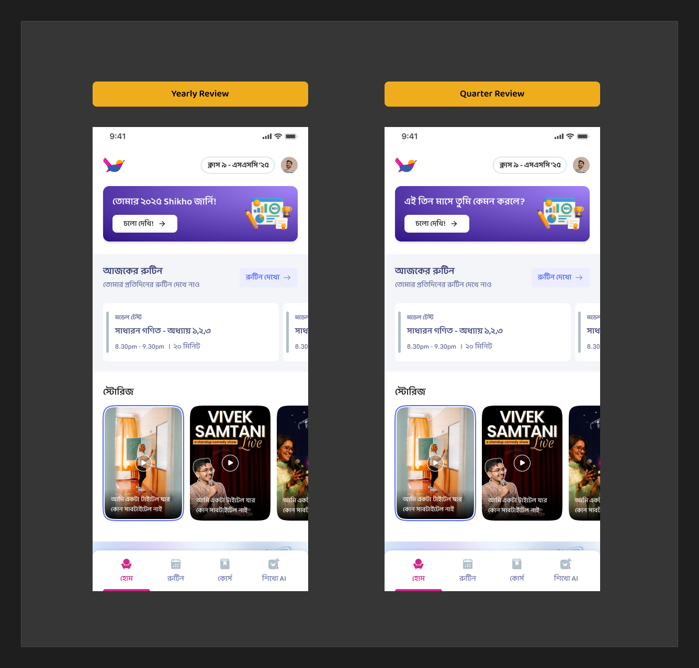

The brief shifted the moment the CEO weighed in. This plan takes his steer literally: it specifies the insight engine that turns the data we already have into ~20–30k individually-tailored wraps — and lists exactly what to build, have, and get to ship it.
On 17 Oct, after the concept email went out, Ishmam Ahmed Chowdhury replied to the whole group. His note is the north star for this feature — worth reading in full, because it changes what "done" means.
A few high level thoughts from my side — basic things like: Favorite teacher page with visual — the content they've consumed the most. Subject they are best at with motions — based on exams attempted/marks.
Philosophy — What makes Spotify Wrapped unique is that it generates insights based on the individual. Over here, the designs look initially nice but we are mostly representing user data attractively. Let's go a step deeper. Research Spotify Wrapped — specifically, the different combinations of pages it generated and how it uniquely tailored the wrap for each user over at least the past three years. Mapping that to Shikho and the data we have of a user should end up creating something much more meaningful.
My experience after going through wrapped would be — wow, I learned something new about myself — maybe something I subconsciously knew. Our hope should be, if we are generating a Year Review for about 20 to 30 thousand students — we should make it as unique as possible for each user.
— Ishmam Ahmed Chowdhury, in the "Shikho Year-End Wrap 2026 | Ideas & Feedback" thread
Tasmeet (PM) confirmed the data spec already anticipated most of this: favourite teacher (by live classes), strongest subject (quiz accuracy), best model-test & live-exam with subject, and the per-subject / per-month / time-of-day splits that insights are built from — plus newly-added exam results by subject, subject × time-of-day, and Shikho AI by subject & month. So the data is largely in hand. What is not yet designed is the layer that turns it into individual insight. That layer is this document.
The three directions (A3 Poster, B3 Marksheet, C3 Journey) are a fixed sequence of the same slides for everyone: active days → streak → night % → live classes → quizzes → video → top subject → a learner label → share. Beautiful, but the same shape for all 30k students. This is "representing user data attractively."
A wrap where the set of pages, their order, and their copy differ per student, chosen from a larger library by what is actually true and surprising about that student — ending in a moment of "I didn't realise that about myself." Same data; a selection engine on top.
The distance between the two is not more metrics. It is three missing pieces: (a) a library of insight templates bigger than any one student sees, (b) a rule + scoring system that picks each student's subset, and (c) combination insights that cross two signals (the "step deeper"). The rest of this plan specifies all three.
Ishmam asked us to study how Wrapped tailored itself over the last three years. The mechanics that create the uniqueness, and their Shikho equivalent:
| Spotify mechanic | What it does | Shikho equivalent (data we hold) |
|---|---|---|
| Core stats everyone gets | Top songs, top artist, minutes listened, top genre. | Active days, total hours, top subject, favourite teacher, quizzes done. |
| Listening Personality (2022) | 16 archetypes from 4 behavioural axes (e.g. explorer vs. loyalist). The finale "who you are" moment. | A learner personality from Shikho's axes — consistency, intensity, breadth, timing, mode. §6. |
| Eligibility-gated slides | You only get "your concert" if you went; "audio day" needs enough daytime+night data. Slides appear only if they apply. | "Night owl" only if night-share high; "favourite teacher" only if enough live classes; "comeback" only if accuracy rose. Gates per card. |
| Comparative framing | "You were in the top 0.5% of listeners of X." | "Top 5% in your class/program" — from the composite score & leaderboard we already compute. |
| Temporal breakdowns | Top songs by season; "your music evolution" by quarter. | Per-month / per-quarter study & accuracy; biggest day; weekday pattern. All in the warehouse. |
| Combination / revelation | "Sound Town", "audio aura" — derived by crossing signals into something the user didn't state. | "Your accuracy rose in the months you joined more live classes." "You study Physics at night, Math in the morning." Cross-signal cards. |
The pattern underneath all three Wrapped years is the same: a large catalogue of templates, a per-user selection, and a derived archetype finale. That is a build we can do with the data we already have.
One nightly batch produces, per paid student, a unique ordered wrap — not by templating screens, but by scoring a library of insight cards against that student's record and picking the best handful.
Each card declares a minimum-data rule and an eligibility rule. A card that doesn't clear both is never shown — so no empty "0 classes" slides, and low-data students fall through to gentle cards.
Each eligible card returns a 0–1 "interestingness" — how far the value sits from the typical student (percentile / z-score from BI's distributions), and how rare the card is. The surprising beats the mundane.
Take the top 8–12 cards, enforce category variety (not three subject cards in a row), then order on a drama curve: warm open → build → personality reveal → share.
Why this is mostly a data/rules job, not a UI job: SC-1737 already keeps every per-subject, per-month and time-of-day split precisely so "these combinations can be worked out later without new data work." The engine is where that promise gets cashed in. The frontend renders whatever ordered list the engine emits.
A first cut of the catalogue — bigger than any one student sees. Each card is an insight ("wow" line), a trigger that decides who gets it, the data behind it, and whether we have / build / get that data. CEO-named asks are tagged.
| Card | The "wow" line (illustrative) | Shows when | Data | Status |
|---|---|---|---|---|
| Opener & effort — most students | ||||
| Active days | ১৮৭ দিন তুমি পড়তে এসেছ — সপ্তাহে প্রায় ৫ দিন | always (≥ min days) | user_activity_duration_agg | HAVE |
| Longest streak | টানা ২৩ দিন — ১২ মার্চ থেকে | streak ≥ tier min | same (consecutive dates) | HAVE |
| Total hours | ১৪২ ঘণ্টা — না ঘুমিয়ে টানা ৬ দিন পড়ার সমান | always | sum of *_duration | HAVE |
| Most-consumed content CEO | সবচেয়ে বেশি দেখেছ ভিডিও — ৪৮ ঘণ্টা | always | duration by content type | HAVE |
| Who you are as a learner — the surprising middle | ||||
| Night owl / early bird | তোমার ৬১% পড়া রাতে — তুমি রাতজাগা তারা | a time band ≥ 50% | datafuse.user_activity_agg | BUILD |
| Favourite teacher CEO | তোমার প্রিয় শিক্ষক রাকিব স্যার — ৪২টা ক্লাস | live classes ≥ min | student_attendees+teacher_attendees+Teachers | BUILD |
| Top subject by time | পদার্থবিজ্ঞানে দিয়েছ ৪১ ঘণ্টা — সবচেয়ে বেশি | subject time ≥ min | subject reconstruction (video+live+quiz logs) | BUILD |
| Best subject on exams CEO | পরীক্ষায় তোমার সেরা বিষয় রসায়ন — গড় ৮৪% | ≥ 3 exam subjects | model_test_session, user_activities (LiveExam) | GET |
| Quiz grinder / hard-Q hero | ১,৮৪০টা প্রশ্ন — তার ৩১০টা কঠিন প্রশ্ন সঠিক | questions ≥ min | mcq_user_chapter_daily | HAVE |
| Live-class champion | ৭২টা ক্লাসের ৬৩টায় ছিলে — ৮৮% উপস্থিতি | attendance ≥ tier | student_attendees vs lessons | HAVE |
| Shikho AI companion CEO-new | শিখো AI-কে ২১৪টা প্রশ্ন — বেশিরভাগ রসায়নে | AI messages ≥ min | gen_ai_conversations, gen_ai_sessions | GET |
| Badges & milestones | এ বছর তুমি জিতেছ ৯টা ব্যাজ | badges ≥ 1 | StudentBadges+GamificationBadges | GET |
| Growth & combination — the "step deeper" | ||||
| Comeback / most improved | বছরের শেষে তোমার নির্ভুলতা বেড়েছে ২২% | accuracy trend ↑, enough months | accuracy by month, mcq_user_chapter_daily | HAVE |
| Classes → accuracy link combo | যে মাসে বেশি লাইভ ক্লাস করেছ, নির্ভুলতাও বেশি ছিল | correlation clears threshold | attendance × accuracy, by month | BUILD |
| Subject × time-of-day combo | পদার্থবিজ্ঞান পড়ো রাতে, গণিত সকালে | two subjects, clear split | subject logs × time band | BUILD |
| Opportunity subject | একটু সময় দিলেই জীববিজ্ঞান হবে তোমার সেরা | high accuracy, low time | accuracy vs time by subject | BUILD |
| Percentile / rank | তোমার প্রোগ্রামে তুমি টপ ৫%-এ | rank ≤ cutoff (as 2025: top 50) | composite score + leaderboard | BUILD |
| Loyalty & close | ||||
| Years with Shikho | তুমি ৩ বছর ধরে শিখোর সাথে | returning student | Transactions, programs | BUILD |
| Lifetime totals | ৩ বছরে মোট ৪১০ ঘণ্টা পড়েছ | returning + history exists | multi-year aggregates | GAP |
| Learner personality finale | তুমি একজন "নিয়মিত রাতজাগা পড়ুয়া" | always (derived) | axes in §6 | BUILD |
| Share card | তোমার ২০২৬ — শেয়ার করো | always | name-hideable; PNG 1080×1920 | BUILD |
Roughly 22 cards; a typical student sees 9–12. The three combo cards are the heart of the CEO's "go a step deeper" — they're low-cost to compute because the per-month and per-subject splits already exist.
The finale "who you are" moment — Shikho's answer to Spotify's Listening Personality. Derived, never asked. Built from five behavioural axes we can measure today:
| Axis | Low ↔ High | From |
|---|---|---|
| Consistency | sporadic ↔ regular | active days, streak |
| Intensity | light ↔ marathon | hours per active day, biggest day |
| Breadth | specialist ↔ all-rounder | spread of subject time |
| Timing | early bird ↔ night owl | time-of-day split |
| Mode | watcher / quizzer / class-goer / asker | dominant content type + AI use |
A primary archetype comes from the dominant mode, with a modifier from consistency + timing — giving a large set of named Bangla types. A first cut:
Exact axes, cut-offs and the type names are Product/Brand calls — all are settings, tunable without a release, as SC-1737 requires. The point here is that each type is backed by numbers we can already compute.
The good news for the CEO's ask: the engine runs mostly on data already in the datafuse warehouse. The gaps are a short, known list.
user_activity_duration_aggmcq_user_*student_attendees, teacher_attendees, lessonsuser_activitiesStudents, Transactions, programsgen_ai_*), badges (StudentBadges), best model-test (model_test_session), QR scansFull field-by-field source mapping lives in SC-1737 and in the companion year-end-wrap-data-build-plan.html; this section is the engine-level summary.
I pulled the live 2026 home and last year's placement from Figma. The entry point is a solved problem — we reuse the prime slot the 2025 review already owned.

Recommended delivery: a web story screen the app opens (prototype direction C3 "Journey"), with the 2025 native share bridge reused. Web lets Product iterate the insight copy without an app release — which matters when the engine is tuned by settings.
data_pipeline_bronze).is_report_available flag.Reuse, don't rebuild (from the 2025 ship): the home-banner slot & interaction, native screenshot → share sheet, per-program rank (top 50, Bangla ordinals, tie handling), engagement-tier copy pattern, the report-availability flag, and the backend API shape. The genuinely new work is B, the insight engine — which is where the CEO's bar is won or lost.
Say which and I'll do it next: (a) turn the card library into the concrete per-student JSON contract for engineering; (b) write the full Spotify-Wrapped 3-year teardown (2021–2024 slide-by-slide) with a Shikho card mapped to each, as the CEO literally requested; or (c) draft the insight-engine spec (gate/score/order pseudocode + the distribution asks for BI) to drop onto SC-1737.